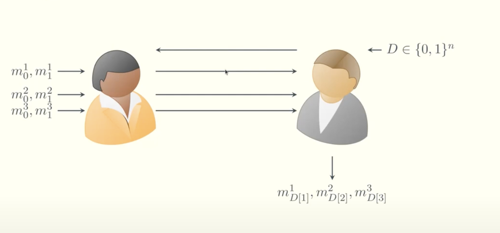
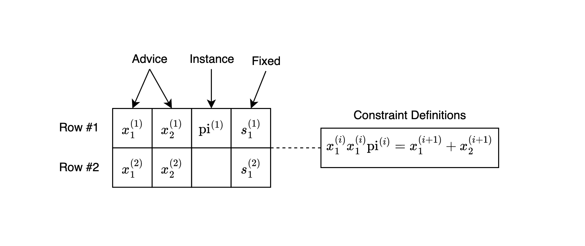

Introduction to Trinity

What is Trinity?
Trinity is a two-party computation (2PC) protocol designed to minimize interaction rounds, enable input verifiability, and facilitate reusability. It combines three key cryptographic concepts:
- Extractable Witness Encryption, powering Laconic Oblivious Transfer (LOT).
- Garbled Circuits.
- PLONK for verifiable inputs.
The core mechanism unifying these concepts is the KZG polynomial commitment scheme. Trinity offers a novel approach to handling user data by placing data objects at the center of computation. Users can commit to structured data (e.g., dictionaries), generate verifiable proofs about their contents, and privately interact with other parties.
The main goal of Trinity is to shift the perspective on zero-knowledge proofs (ZKPs) beyond simple gate computations, enabling them instead to serve as verified private inputs within secure 2PC interactions.
How Is Trinity Different From Other Approaches?
Let’s assume Alice and Bob each hold a private input (a, b) and want to compute f(a, b) without revealing anything to each other. There are several cryptographic ways to achieve this, each with different trade-offs:
1. Multiparty FHE (Fully Homomorphic Encryption)
FHE enables computing arbitrary functions on encrypted inputs. With multiparty FHE, each party encrypts their inputs under a joint key, and computation happens homomorphically.

- Pros:
- Minimal interaction.
- Can delegate computation to untrusted servers.
- Cons:
- High computational cost, even for simple functions.
- Still impractical for most real-time use cases.
- Complex key management across parties.
Good fit when clients are weak and untrusted computation is offloaded to powerful servers (e.g., dark pools, PSI).
2. Secret Sharing-based MPC
Each party splits their input into shares and distributes them across multiple computation nodes. The function f is then evaluated collaboratively over the shares.
- Pros:
- Efficient for many inputs and functions.
- Mature tooling.
- Cons:
- Requires high liveness and low latency between nodes.
- Expensive in bandwidth and synchronization.
- Hard to scale in high-latency environments.
Great when you control your infrastructure or have low-latency assumptions (e.g., private statistics, secure ML inference).
3. Garbled Circuits with Classical OT
In classical 2PC using GC, one party (the garbler) encrypts the circuit, and the other (the evaluator) receives encrypted wire values via Oblivious Transfer (OT). It's a well-established approach with strong security guarantees under semi-honest or malicious models.

- Pros:
- Mature cryptographic primitive.
- Supports arbitrary functions.
- Non-interactive once the circuit is garbled and inputs are transferred.
- Cons:
- No built-in verifiability of inputs — relies on trusted setup or assumptions.
- Cannot reuse or prove input commitments across sessions.
Good for basic 2PC with moderate setup cost when parties are trusted to follow protocol but don’t want to reveal inputs.
4. Trinity: Laconic OT + GC + ZK Inputs
Trinity enables two parties to compute a function using garbled circuits — with a twist:
- Inputs are committed with KZG.
- Verifiability is added via ZK (PLONK).
- Oblivious Transfer is optimized using Extractable Witness Encryption.

- Pros:
- Input integrity is provable.
- Few interaction rounds (Laconic OT).
- No need to trust delegated infrastructure.
- Input commitment is reusable.
- Cons:
- Limited to 2PC.
- Verifiability with Halo2 PLONK is costly.
Ideal for verified 2PC in low-trust environments where inputs need to be reused or proven (e.g., self-attested data proofs, benchmarking, private voting).
üìä Comparison Table
| Approach | Trust Model | Interaction Rounds | Computation Cost | Bandwidth | Input Verifiability | Best For |
|---|---|---|---|---|---|---|
| FHE | Untrusted server | Low | üö® High | Low | ❌ | Offloaded compute |
| Secret Sharing MPC | Honest majority | High | Moderate | High | ❌ | Server-side compute |
| GC + Classical OT | No delegation, Semi-honest | Moderate | Moderate | Moderate | ❌ | Generic 2PC |
| Trinity (GC + LOT + ZK) | No delegation, Semi-honest (+ZK) | üîÅ Few | Low‚ÄìModerate | Low | ‚úÖ (PLONK) | Verified 2PC, reusable inputs |
üß© Applications and Use Cases
Trinity is built for use cases that don’t require liveness — meaning participants can interact asynchronously, without being online at the same time. It’s ideal for private matching, selective interactions, and verifiable decision logic over user data.
At its core, Trinity allows a user to:
- Commit to a bitstring representing their private input (e.g., encoded attributes, preferences, or selections),
- Prove the validity of this input via a zero-knowledge proof (e.g., PLONK),
- Publish the commitment and proof (e.g., on-chain or off-chain),
- Allow others to interact by garbling a circuit with their own private inputs and returning it for evaluation.
üõí Use Case: Provable Listings & Private Bidding (The Weeknd Concert Ticket)
Imagine a user wants to resell a concert ticket. Here's how Trinity could support a privacy-preserving, verifiable flow:
-
Ownership Proof
The seller generates a ZK proof of ticket ownership using, for example, a ZKEmail circuit verified via Halo2. -
Price Encoding and Commitment
They encode their desired price range (e.g., 100–150 USD) as a bitstring input to a 2PC Boolean circuit, and commit to it in the same Halo2 circuit as above. -
Public Posting
The ZK proof containing the KZG commitmentare is posted (e.g., on a smart contract or IPFS), making the listing publicly visible but still private in terms of content. -
Private Offer Submission
A buyer retrieves the public circuit, garbles it with their own price offer (also as a bitstring), and sends the garbled circuit back. -
Secure Evaluation
The seller evaluates the garbled circuit to check whether the offer matches their private range, learning only whether it is acceptable — not the exact bid.
This enables sealed-bid auctions, private marketplaces, or anonymous deal matching, while retaining cryptographic integrity.
üéÆ Additional Scenarios
-
ZK Social Discovery:
Users encode and commit to private attributes (e.g., age > 18 through anon-aadhaar or self.xyz, shared interest tags), and interact via circuits that match compatible criteria without revealing exact values. -
Private Gameplay:
In games involving secret strategies (e.g., card games, bluff mechanics), players commit to private state and verify interactions using 2PC. -
Credential Matching:
In employment or dating contexts, participants encode structured claims (e.g., degrees, preferences, income ranges) and privately compute matches.
Structure of this Documentation
- Laconic Oblivious Transfer: Learn about the efficient OT protocol used in Trinity.
- Garbled Circuits and Laconic OT: Understand how garbled circuits are combined with LOT.
- ZK Input Verification with PLONK/KZG: Explore how inputs are made verifiable using ZK proofs.
Target Audience
This documentation is tailored for cryptographers, developers, and researchers seeking to leverage Trinity’s advanced cryptographic techniques for secure, verifiable, and private two-party computation.
Acknowledgments
We would like to thank all contributors, researchers, and supporters who have helped make Trinity possible. Special thanks to Vivek and the Cursive team for originally designing the scheme, the research team behind the Laconic OT paper and their implementation. Thanks Nakul and brech1 for their help in integrating secure garbling and Halo2 LOT. Additionally, we extend our gratitude to the authors of the mpz library and the PSE Halo2 team for their foundational work and inspiration.
Laconic Oblivious Transfer (OT)
Overview
Laconic OT plays a crucial role in Trinity, it's the core fo the protocol that enables fewer round of communication between the two parties.
-
Definition:
Laconic Oblivious Transfer (Laconic OT) is a two-message protocol where the receiver holds a large input (typically a dictionary $D$), and the sender holds a small input—an index $i$ and two messages $m_0$, $m_1$. The receiver learns $m_b$, where $b = D[i]$ is the $i$-th bit of their dictionary, without learning anything about $m_{1-b}$. Meanwhile, the sender learns nothing about the receiver's dictionary. -
Motivation:
Laconic OT is crucial for secure two-party computation in bandwidth-constrained or interaction-minimal settings. It minimizes communication by shifting the burden of computation to the receiver (reverse delegation), enabling succinct, two-message protocols in advanced cryptographic settings like:- RAM programs with private memory access
- Private set intersection
This is a traditional OT between Alice and Bob. Informally, OT guarantees that Bob receives from Alice the message corresponding to his choice bit $b$ (i.e., $m_b$), without revealing $b$ to Alice or learning anything about $m_{1-b}$.

In the traditional protocol, each message transfer requires two rounds of communication between Alice and Bob.
The Laconic version of OT improves efficiency. Bob compresses all his $n$ bits into a dictionary $D$ and sends a succinct commitment of $D$ to Alice. This allows the transfer of $n$ messages between Alice and Bob in just two communication rounds—effectively batching all the Oblivious Transfers together.

Witness Encryption (WE) for KZG is used to compress the dictionary Bob sends. After receiving the commitment $\mathcal{com}$ from Bob, Alice encrypts her messages under the KZG openings. For example, she encrypts $m_0^1$ under the opening for $0$ at position $1$, and $m_1^1$ under the opening for $1$ at position $1$. Bob can only decrypt the message corresponding to the bit he committed to at position $1$ of $D$, by providing a valid opening proof.
Key Concepts
The Laconic Property
"Laconic" in this context refers to communication complexity being sublinear in the receiver's input size. Instead of transmitting the entire database or program, the receiver sends a digest (a succinct commitment), and the sender replies with a short ciphertext. This is especially beneficial when:
- The receiver has large input ($D \in {0,1}^n$)
- The sender’s input and communication must remain small
- Round complexity is critical (only 2 messages total)
Benefits:
- Enables practical, low-latency secure computation
- Avoids heavy public-key operations in the online phase
- Supports applications like RAM access, PSI, and circuit obfuscation
Technical Explanation
We now describe the actual Laconic OT construction, following the structure from the 2024 paper Extractable Witness Encryption for KZG Commitments and Efficient Laconic OT.
Setup Phase
- The setup takes the security parameter ( $\lambda$ ) and the database size ( $n$ ).
- It runs the setup of a vector commitment scheme (VC):
$$ \text{pp} \leftarrow \text{VC.Setup}(1^\lambda, 1^n) $$
Hashing the Receiver's Input
- The receiver (Bob) has a database $D \in {0,1}^n$.
- He computes a commitment to $D$ and prepares opening proofs:
$$ (\mathsf{com}, \overline{\mathsf{aux}}) \leftarrow \text{VC.Commit}(\text{pp}, D) $$
$$ (\pi_1, \dots, \pi_n) \leftarrow \text{BatchOpen}(\text{pp}, \overline{\mathsf{aux}}) $$
- He sends $\mathsf{digest} = (\mathsf{com}, D, \pi_1, \dots, \pi_n)$ to the sender.
Sender’s Message Encoding
- Given the digest, the sender (Alice) chooses an index ( $i$ ) and two messages ( $m_0$, $m_1$ ).
- She encrypts them under witness encryption for the statements:
“bit at index ( $i$ ) is 0” and “bit at index ( $i$ ) is 1”:
$$ ct_0 \leftarrow \text{WE.Enc}(\text{pp}, (\mathsf{digest}, i, 0), m_0) $$
$$ ct_1 \leftarrow \text{WE.Enc}(\text{pp}, (\mathsf{digest}, i, 1), m_1) $$
- She sends ($ct_0$, $ct_1$) to the receiver.
Receiver’s Decryption
- The receiver knows the opening proof ($\pi_i$) for index $i$, and the bit $b = D[i]$.
- He uses it as a witness to decrypt the corresponding ciphertext:
$$ m_b \leftarrow \text{WE.Dec}(\text{pp}, \pi_i, c_b) $$
- Security ensures he cannot decrypt $ct_{1-b}$.
Summary
This construction achieves laconicity by collapsing the full database $D$ into a short digest. Using KZG-based vector commitments and Witness Encryption, the sender encrypts under assumptions about the receiver’s bits. Only valid openings allow correct decryption, enforcing privacy and minimal communication.
References
-
Original Laconic OT Paper
Fleischhacker et al., Extractable Witness Encryption for KZG Commitments and Efficient Laconic OT, 2024 [Paper link] -
Private Laconic OT with Preprocessing
Bhadauria et al., Private Laconic OT with Preprocessing, 2024
[Paper link]
[Conference page] -
Leku blogpost on Extractable Witness Encryption for KZG
[HackMD link] -
Video Presentation
YouTube: "Extractable Witness Encryption for KZG Commitments and Efficient Laconic OT" (authors' presentation)
Garbled Circuits and Laconic OT
Introduction to Garbled Circuits
Garbled circuits enable secure two-party computation where one party (the garbler) encrypts a circuit such that another party (the evaluator) can evaluate it without learning the garbler’s inputs or the intermediate values.
Basic Workflow
-
Garbler:
- Generates encryption keys for each wire and bit value.
- Encrypts the truth table of each gate with the corresponding keys ("garbling").
- Shares encrypted circuit + encrypted labels for evaluator’s inputs.
-
Evaluator:
- Obtains one encrypted label per input bit via Oblivious Transfer (OT).
- Uses these to traverse the circuit gate-by-gate.
- Retrieves garbler's output via decoding bits.
Integrating Laconic OT
How Trinity Uses Laconic OT in Garbled Circuits
Instead of executing one classical OT per bit of evaluator input, Trinity uses Laconic OT to compress all OT interactions into a two-message digest commitment. This minimizes round complexity and bandwidth.
Integration Flow
-
Evaluator Side
- Converts each bit of input into a
TrinityChoice(Zero or One). - Generates an OT receiver and a commitment using:
#![allow(unused)] fn main() { let ot_receiver = trinity.create_ot_receiver(&evaluator_bits)?; let receiver_commitment = ot_receiver.trinity_receiver.commitment(); } - Sends this single commitment to the garbler.
- Converts each bit of input into a
-
Garbler Side
- Initializes an OT sender with the evaluator’s commitment.
- For each evaluator input bit, computes the two wire labels (one per bit value):
#![allow(unused)] fn main() { let key = &input_keys[key_idx]; let zero_label = key.clone(); let one_label = Key::from(*key.as_block() ^ delta.as_block()); } - Sends these via OT:
#![allow(unused)] fn main() { ot_sender.trinity_sender.send(rng, i, m0, m1) } - The result is a ciphertext (
TrinityMsg) for each bit.
-
Evaluator Decryption
- Receives the correct label without revealing the input bit:
#![allow(unused)] fn main() { let decrypted = ot_receiver.trinity_receiver.recv(i, ciphertext); let mac = Mac::from(Block::new(decrypted)); } - The MAC becomes an authenticated input to the garbled circuit.
- Receives the correct label without revealing the input bit:
Diagram (Evaluator ↔ Garbler)
Evaluator Inputs (bits)
│
▼
[TrinityChoice::Zero, TrinityChoice::One, ...]
│
▼
KZGOTReceiver::commit() ──▶ Commitment ─────────┐
│
┌──────────┴────────────┐
▼ ▼
Garbler generates wire labels Garbler runs OT:
zero_label, one_label ot_sender.send(i, m0, m1)
│ │
└────── Ciphertexts ◀──┘
▼
Evaluator runs OT recv()
and gets correct MAC
Summary
By directly embedding Laconic OT into the garbling pipeline, Trinity avoids per-bit communication, reducing both communication and computational overhead. Each evaluator input bit is matched with the correct wire label through a single global commitment, preserving circuit privacy and ensuring scalable 2PC execution.
ZK Input Verification with PLONK/KZG
Background
Zero-Knowledge Proofs (ZKPs)
ZKPs allow a prover to convince a verifier that they know a value satisfying some condition, without revealing the value itself.
PLONK and KZG Commitments
- PLONK is a universal and updatable SNARK that supports efficient proofs over arbitrary circuits. It allows inputs to be committed using polynomial commitment schemes.
- KZG Commitments are polynomial commitments with succinct size and verification. They allow the prover to commit to a polynomial and later prove evaluations at specific points.
Usage in Trinity
Verifiable Inputs
In Trinity, input bits committed by the evaluator need to be verifiable—they must be provably constrained to binary values and committed in a zero-knowledge way.
Rather than computing a KZG commitment inside a circuit (which would be expensive due to multi-scalar multiplications), we leverage PLONK’s native use of KZG commitments for advice columns.
How It Works
- Setup: A Halo2 circuit is built where the evaluator’s input bit vector is placed in an advice column.
- Constraint: Each value is constrained to be a bit (0 or 1) using a simple custom gate: $$ s \cdot b \cdot (b - 1) = 0 $$
- Proof Generation: The prover runs Halo2’s KZG-based proving system.
- Commit Extraction: The resulting proof includes a commitment to the advice column—this commitment is extracted and reused in Trinity’s Laconic OT as the receiver’s commitment.
Code Summary
#![allow(unused)] fn main() { let circuit = BitvectorCommitmentCircuit { bitvector }; let proof = create_proof(...); let commitments = extract_commitments(&proof, 1); // Gets KZG commit to advice column let com = commitments[0]; }
This commitment becomes the receiver’s Com in Laconic OT.
Visual Overview

Advice Column: [ 1, 0, 1, 1, 0, 0 ]
Constraint: s * b * (b - 1) = 0 for all b
Commitment: Com(advice_poly)
Output: KZG Commitment (G1 point)
Benefits and Considerations
Advantages
- Verifiability: Inputs are guaranteed to be well-formed bitstrings, but you can extend checks to verify a signature or any computation over the bitstring data.
- Trust Shift: The evaluator’s commitment is now backed by a ZK proof.
- Reuse: Proofs are reusable across OT and other verification protocols.
Trade-offs
- Proof Overhead: Circuit setup and proof generation are heavier than Plain OT (raw KZG commitment).
- Performance: Halo2’s proving time and constraint system size must be managed.
Practical Example
- Evaluator Generates a Proof
#![allow(unused)] fn main() { let bitvector = vec![Fr::one(), Fr::zero(), Fr::one()]; kzg_commitment_with_halo2_proof(params, bitvector) }
- Extract Commitment
#![allow(unused)] fn main() { let com = circuit_output.commitment; // G1 commitment to advice column }
- Use in OT
#![allow(unused)] fn main() { let receiver = LaconicOTRecv::new(halo2params, &[Choice::One, Choice::Zero, Choice::One]); let com = receiver.commitment(); }